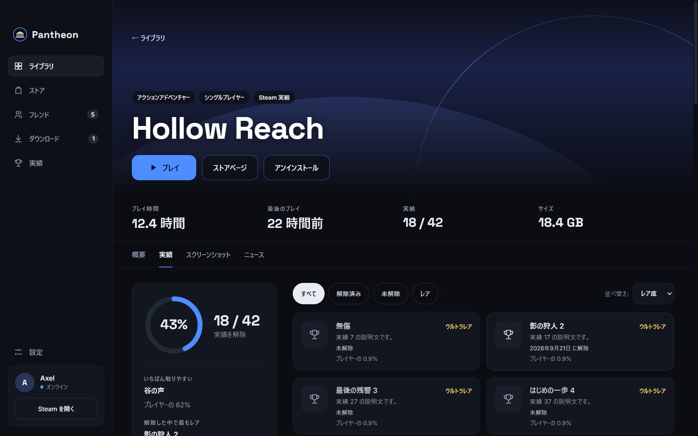
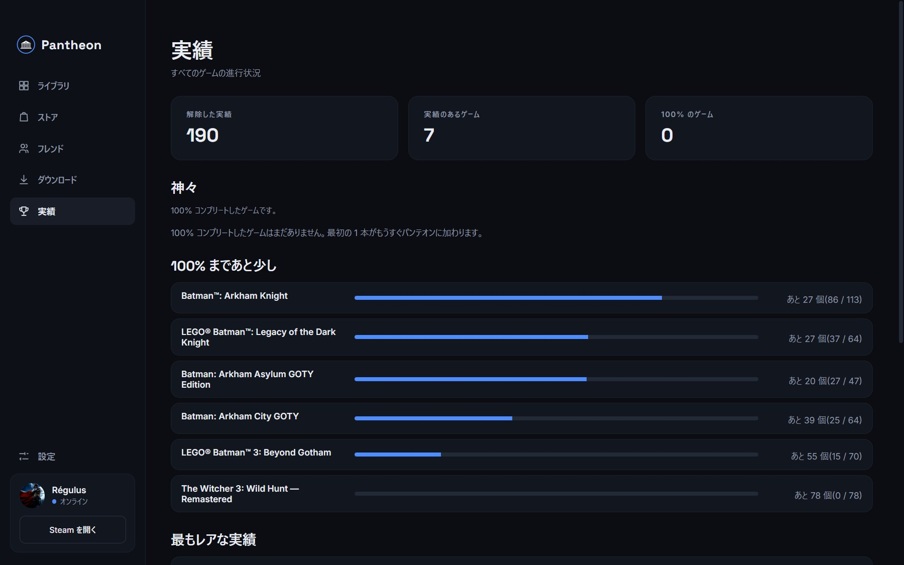
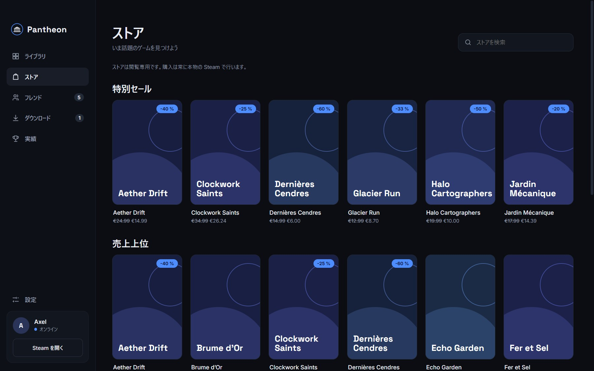
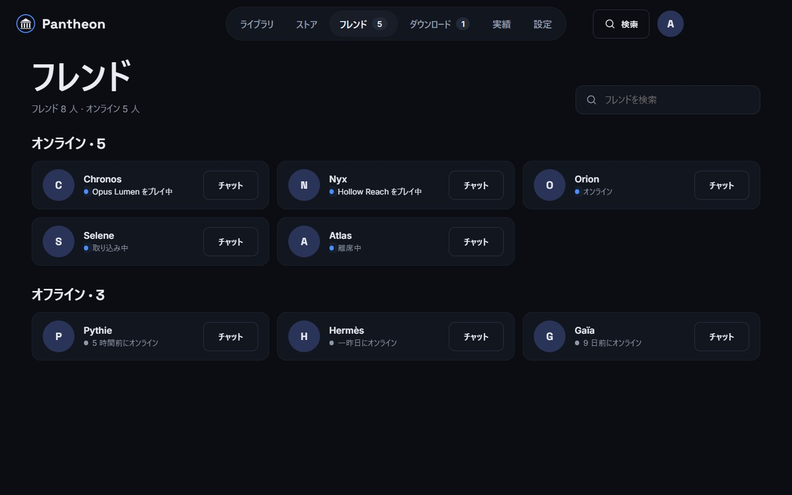

カバー画像、余白、ひとつの操作
グリッドではカバー画像が主役です。マウスを重ねると中央に丸い「プレイ」ボタンが現れます。最後に遊んだゲームは上部に固定され、ワンクリックで再開できます。
- 検索、フィルター(インストール済み・ダウンロード・お気に入り・コンプリート間近)、並べ替え
- 各カバーにインストール状況とダウンロードの進行状況を表示
- 数百本のゲームでも軽快に動作
Steam は多機能ですが、画面は情報が詰まっていて、実績は何度もクリックしないとたどり着けません。この学生プロジェクトは、ひとつの素朴な問いから始まりました。100% コンプリートを追いかける人のために作られていたら、Steam はどんな姿だろう?
ビジュアルアイデンティティ、画面、デザインシステムを設計し、Steam のローカルファイルを読み取って公式 API をあなた自身のアクセスで利用する、本物の Windows アプリ(Electron)として実装しました。
Pantheon は Steam の代わりではありません。Steam はバックグラウンドで動き続け、ゲームはこれまでどおり Steam 経由で起動します。
青いアクセントはひとつだけ。操作と進行状況のためだけに使い、それ以外はカバー画像に場所を譲ります。デザインの指針
グリッドではカバー画像が主役です。マウスを重ねると中央に丸い「プレイ」ボタンが現れます。最後に遊んだゲームは上部に固定され、ワンクリックで再開できます。
進行状況のリング、解除日つきの解除済み実績、そして常に言葉で示されるレア度(コモン・アンコモン・レア・ウルトラレア)。色だけに頼ることはありません。

コレクション全体を一望できます。解除した実績の合計、100% 達成したゲームを集めた「神々」セクション、コンプリートまで近いゲーム、そして解除した中で最もレアな実績。

特別セール、売上上位、新作、検索を閲覧専用で表示します。購入は常に本物の Steam で行い、「Steam で見る」からワンクリックで移動できます。

フレンドをステータス順に並べ、遊んでいるゲームも表示します。「チャット」ボタンで Steam の会話を開けます。進行中のダウンロードは、メニューのバッジも含めて進行状況が分かります。

スクリーンショットは作者自身の Steam ライブラリです。フレンド画面のみ架空のフレンドを使っています。
Pantheon は、インストール済みのゲームならすぐに使えます。無料の Steam API キーを設定すると、未インストールの所有ゲーム、実績、フレンドも表示できます。
Steam をインストールし、いつもどおりサインインします。Pantheon は Steam のローカルファイルを読み取るだけで、パスワードは一切求めません。
インストーラーを実行します。署名されていないため Windows が警告を表示することがあります。その場合は「詳細情報」→「実行」を選んでください。
インストール済みのゲームと、あなたのプレイ時間がすぐに表示されます。
下のガイドに従うと、すべてのゲーム、実績、フレンドを表示できます。
実績とフレンドを表示するには、Steam の「プライバシー設定」(プロフィール → プロフィールを編集)で「ゲームの詳細」と「フレンドリスト」を公開にし、「ゲームの合計プレイ時間を常に非公開にする」のチェックを外してください。
キーは個人用です。決して共有しないでください。Pantheon はキーをパソコン上で暗号化して保管し、Steam にのみ送信します。
ライブラリを読み取るインターフェースには、セキュリティの面でも非の打ちどころのなさが求められます。このプロジェクトは、デザインと同じ水準の厳しさで作られています。
Steam へのログインはありません。アプリはローカルファイルを読み取り、あなた自身の API キーを使います。キーは Windows の保管庫でパソコン上に暗号化されます。
コンテキストの分離、サンドボックス、厳格なセキュリティポリシー、許可リストに限定した Steam リンク、数個のドメインに限定した通信。
アカウントも利用統計もサーバーもありません。すべてお使いのパソコン内に残ります。Steam への通信はキャッシュされ、回数にも上限があります。
48 件の自動テストが、Steam ファイルの読み取り、レア度の計算、リンクの検証、キャッシュ、API クライアント、翻訳をカバーしています。
変数ひとつで、Steam なしの架空データですべてが動きます。テストやデモに便利です。
画像の遅延読み込み、カード単位の更新、画面外の描画の省略により、数百本のゲームでも軽快です。
Steam をインストールした Windows 10 または 11 が必要です。インストーラーは署名されていないため、Windows が警告を表示することがあります。その場合は「詳細情報」→「実行」を選んでください。
無料の非営利学生プロジェクトです。